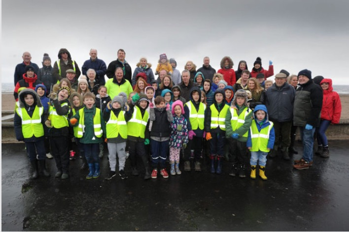
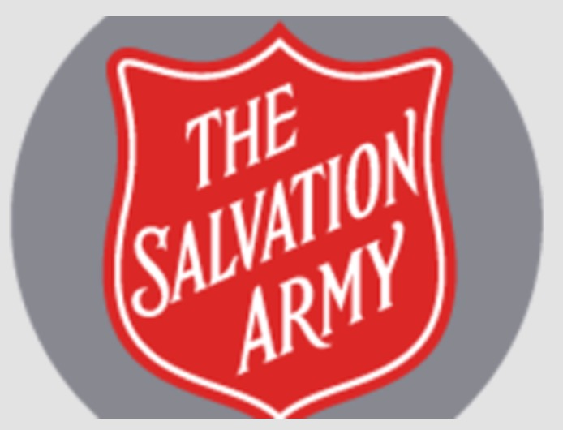
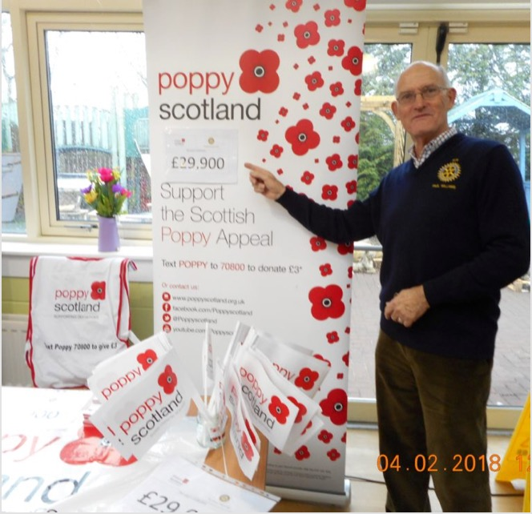

Get Involved....and you don't have to be a member
There are lots of different ways to become involved with Ayr Rotary, and you don't have to become a member. We are such an active group that we run many projects simultaneously, and often require help from non-members. We now focus on practical help that we can provide to local organisations. This means members and others using their talents to make a difference. Have a look at some of our current activities below.
Local Environment

We are looking at various ways the current environmental issues impact our planet, and in particular how we can influence the decision makers for the benefit of the local community. Watch this space for new ideas shortly...
Annual Beach Clean

Ayr Rotary run the annual beach clean in April, with the help of other Rotary clubs and a massive contribution from volunteers. A few hours on one Saturday morning can transform our local beaches.
Food Bank

We have supported the Ayr Salvation Army Food Bank for many years, by collecting tins of food and other essential foodstuffs. We also provide practical assistance by helping organise incoming goods, and sorting ready for pick up.
Annual Poppy Appeal

In 2009, Ayr Rotary took over the running of the local Poppy Appeal, and transformed its success. We are able to provide a large number of collectors, some are members, but many from other organisations. Much of the work is delivering cans to shops and subsequently collecting them and hand them in to the bank.
Message in a Bottle
Make a Donation
We understand some people want to make a difference, but are perhaps not so fit or simply don't have time to get actively involved. We still need them! The money we raise changes lives and it only takes a few seconds to make a payment by Paypal. You do not need a Paypal account - just click the button.